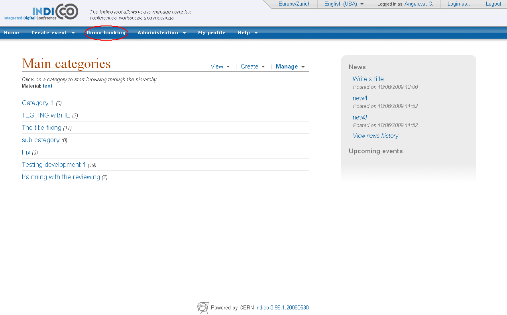
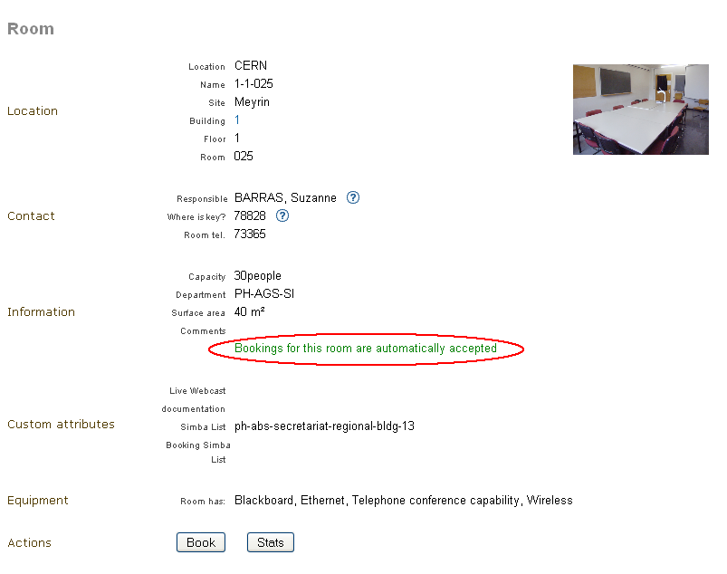
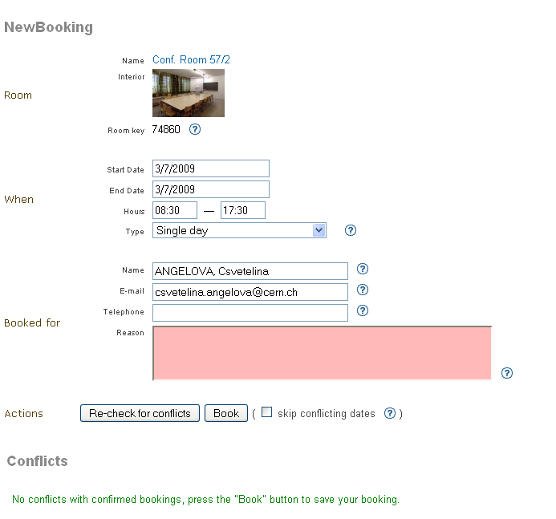
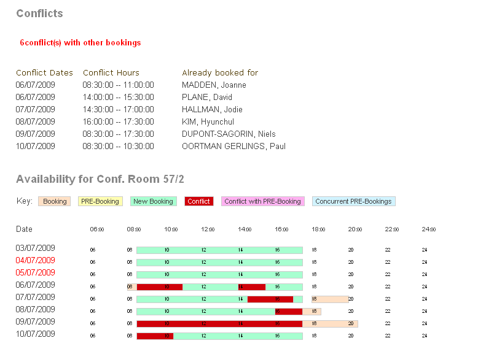

7. Conference Room Booking¶
7.1. Introduction¶
This chapter describes the Indico module for booking conference rooms.
Indico users can book conference rooms for their conference and meeting purposes. Bookings can also be standalone - they do not have to be bound to any event. Room managers can monitor and moderate all bookings. Indico administrators can create rooms and manage their data.
Instead of being a boring manual no one ever reads, this file is an introduction, and it assumes you have some intuition of how the web works. The suggested way of learning is to start with a tutorial, then play with the module on your own. Simply use the software as any other Web page. Read context help along the way. Finally, come back for some tips.
7.2. The Tutorial¶
You can read the Core Features listings in order to get a full overview of the options of the room booking modules. It allows you to assign a room to a particular event, a talk or simply to book a room on its own, without attaching it to a event. The booking can then be managed from the administration area.

7.2.1. Getting into Room Booking Module¶
To use Indico::CRBS directly, just click on Room Booking in the Indico home page, in the top blue bar. To book rooms for your event, go to the event management page and click on the Room Booking option. In both cases you will be asked to sign in. Use your Indico login.
7.2.2. The First Page¶
The Room Booking Module first page depends on who is logged in. For most people, it will show a list of their bookings. The My bookings menu option will give you the same list. Room managers will see bookings of rooms they manage, so they can have a quick overview. If you are a room manager, use the Bookings option in My rooms menu to show the page again (this is only available for room manangers).
7.2.3. The Most Important Tip¶
If you require it, point at the question mark icon  with your
mouse to see context help. Context help is meant to answer most of
your questions along the way.
with your
mouse to see context help. Context help is meant to answer most of
your questions along the way.
7.2.4. Room Names¶
If a room does not have a name, the default name is built in the following way:
“location: building-floor-room”
Examples: “CERN: 304-1-001”, “Sheraton: 0-34-013”.

7.2.5. Three Kinds of Room¶
There are three kinds of room. They determine how much freedom users have.
- Public rooms which do not require confirmation (black/green
colour). This means all bookings are accepted.
- Public rooms which do require confirmation (orange colour). You can
PRE-book them and wait for acceptance or rejection.
- Private rooms which cannot be booked at all (red colour). Only the room
manager can book his/her private room. If you need such a room, you should ask this person to create a booking for you.

7.2.6. Six Types of Booking¶
There are six types of booking. They allow you to define different types of recurring reservation. A common example is a weekly meeting (which takes place at the same time every week). You can choose from:
- Single day: not recurring, one-time event
- Repeat daily: use if you want to book many subsequent days, like an entire week
- Repeat once a week: the booking will take place every week, always on the same day
- Repeat once every two weeks: as above, but repeats every two weeks
- Repeat once every three weeks: as above, but repeats every three weeks
- Repeat every month: allows you to do bookings like ‘first Friday of each month’, ‘second Wednesday of each month’, ‘fourth Saturday of each month’, etc.
7.2.7. Booking a Room¶
Essentially there are two steps: selecting a room and filling in a booking form. More detailed steps are:

- On the Indico main page, click the Room Booking menu option. This is how you access the Room Booking Module.
- Click the Book a Room menu option.
- If you know which room you want, simply select it and click Choose. You will be taken directly to the booking form.
- If you don’t, make use of the room searching. Specify dates (click the calendar icon to choose the day with your mouse). You need to select hours and booking type (single day, repeating etc.). Also select other criteria the room must meet, such as capacity and necessary equipment (blackboard, computer projector, etc.). Then click the Search button.
- You will be presented with a list of available rooms meeting your criteria.
- Choose the room you wish to book, then click on the button Book. You can also view the stats of the room by clocking on the button Stats. If you have the correct rights, it is possible for you to modify the details of the room or to delete it by clicking on Modify or Delete.

- Fill in a booking form. If you have searched for rooms, most fields are already filled in for your convenience (this data comes from the searching form). After filling in the form, click the Re-check for conflicts button.
- Scroll the page down to have a look at conflicts. Scroll more to see the room availability calendar. Your booking is represented by a green bar or dark red bar if it overlaps with existing bookings, which are pink. This graphical room preview is useful especially when doing a recurring booking. Give it a try: set the when/type attribute to Repeat once a week, set the end date to be at least 2 months after the start date, and click the Re-check for conflicts again. See the room calendar in its full glory.
- If your booking conflicts with others, you have two options:
- In general, it is better to resolve conflicts manually: by changing dates, hours or maybe trying another room.
- The alternative is to automatically book everything except conflicting days. This may be useful if you do long-term, recurring booking, for example, whole year, every week. Imagine everything looks perfect, except for several weeks when the room is not available. In this case check the ‘skip conflicting dates’ option to book everything except problematic dates.
- Click the Book button.
- If your form is corectly filled, the system will ensure your new booking does not conflict with others. When no conflicts are found, you will be shown the confirmation page which lists the details of your booking.
- Click My bookings from the menu. Your new booking now appears on the list.

Note: some rooms require confirmation. These rooms are usually coded in orange. In this case, you cannot directly book them. You can only PRE-book such a room. PRE-booking works exactly the same way as booking. The only difference is that you must wait for acceptance from the room manager.
Note: you can always modify your booking (or PRE-booking). It will again be checked for conflicts.
Note: you can always browse your own bookings and PRE-bookings using the menu options My bookings and My PRE-bookings.
7.2.8. View your Booking¶
You can view the bookings or pre-bookings that you made by going under the ‘My bookings’ and ‘My PRE-bookings’ sections of the Room Booking side menu. By selecting one of the bookings in the list, you will get the following :

This page contains all the information about a booking, and it allows you to modify, clone or cancel the booking. If the reservation is done for more than a single day, each of the occurences of the booking can be canceled individually. In addition, this page lets you watch the history of the booking (i.e. all the past actions that were performed on this reservation) if you are the creator of the booking. Only the most recent entry is partially displayed, but you can see the rest of it by clicking on the Show All History... link. Additional information about a particular entry can be viewed by clicking the More Info link.
7.2.9. Blocking a Room¶
As a room manager you may create room blockings which prevent regular users from booking certain rooms. This feature can be used for special events during which only a few people should be allowed to create bookings for some rooms.
To create such a blocking, go to ‘Block rooms’ in the Room Booking side menu and follow these steps:
- Choose the period during which the rooms should be blocked by clicking the start and end date on the calendars.
- Enter a reason for the blocking - it will be displayed to users trying to book one of the blocked rooms.
- Add some rooms to the ‘Rooms’ list. Those will be affected by the blocking.
- Unless you want to be the only one to be able to book the blocked rooms, you can add other users or groupe to the “Allowed users/groups” list.
- Submit the blocking after confirming that the chosen period is correct. Once you have created the blocking, the dates cannot be changed.
When trying to book a blocked room, users in the ‘Allowed users/groups’ list will see that the room is blocked and the reason why but will be able to create bookings anyway. You as the creator of the blocking will always be able to override your blocking, so you don’t have to add yourself to the list. The same applies to the owners of blocked rooms. They will see the blocking and a warning that the room has been blocked, but they are able to override the blocking.
You can also create blockings for rooms you don’t own. These blockings will have to be approved be the respective owners - until they do so, other users trying to create a booking on that room will see the pending blocking request but will be able to carry on with their booking.
As soon as the blocking for a room has been approved (blockings for your own rooms are immediately approved when creating the blocking), all bookings colliding with the blocking are automatically rejected.
7.3. Core Features and Constraints¶
7.3.1. Introduction¶
This section describes core capabilities and constraints of the Room Booking Module. It may be useful to assess whether it meets your needs.
Note that the Room Booking Module is NOT supposed to be a general-purpose “room management” or “room booking” software.
It was built with conference rooms in mind. Its main purpose is to make conference organization easier. We see room booking as a part of conference organization (but it is possible to book rooms without associating the booking to an event).
7.3.2. Core Features¶
7.3.2.1. General¶
General features are:
- Stand-alone and “in-conference” mode.
- The stand-alone mode allows you to book, manage bookings and do administration stuff. You don’t have to create an Indico event (the bookings will not be assigned to any Indico event).
- The “In-conference” mode allows you to book rooms for your event. You can assign booked rooms to conferences, lectures, meetings, sessions, contributions or breaks.
- Recurring bookings (‘every day’, ‘every week’, ‘every 3rd Wednesday of a month’, etc).
- E-mail notifications (to users and room managers, about every important action).
- Three user roles: (1) Indico administrator, (2) room manager and (3) ordinary user.
- Optional booking moderation. Each room may work in one of the
following modes:
- Bookings require explicit confirmation of room manager, or
- Bookings are automatically accepted.
7.3.2.2. User¶
Options available to regular users:
- Book a room
- Manage own bookings (track, modify, cancel)
- Search for rooms
- Search for bookings (including archival)
- View existing room blockings
7.3.2.3. Room Manager¶
In addition to what a user has access to, a room manager can:
- Accept and reject PRE-bookings (for his room(s))
- Reject bookings (for his room(s))
- Block rooms from being booked (with confirmation from the room owner)
- Accept blocking requests (for his room(s))
7.3.2.4. Indico Administrator¶
In addition to what a room manager has access to, an Indico Administrator can:
- Switch on/off Room Booking Module
- Configure room booking plugins in admin section
- Add/remove location
- Define room attributes specific to the location
- Define possible room equipment specific to the location
- Manage meeting rooms (add/modify/remove)
7.3.3. Constraints¶
The room must have its manager. It is not possible to define multiple managers for a single room (you can work around this by creating an Indico account shared by several people).
The room must have a defined building, which must be a number. This is mandatory. If you do not need building, put any number there (like ‘0’). If your building naming scheme has letters, we are sorry - the software is not flexible enough for you.
The room must have defined floor (alphanumerical) and room ‘number’ (alphanumerical in fact).
7.4. Dictionary¶
Room: meeting or conference room. Please note that the software is not suitable for managing other rooms, like offices, corridors, etc.
Location: physical location of rooms. Room custom attributes and possible equipment are defined on a location basis. Example: rooms at CERN may have different attributes and different equipment than rooms in Fermilab.
Booking: final reservation of a room. While considered final, it still may be rejected in case of emergency.
PRE-booking: unconfirmed reservation of a room. PRE-booking is subject to acceptance or rejection.
Room responsible/manager: the person who accepts/rejects bookings. Each room has exactly one person responsible. A person may be responsible for any number of rooms.
Room blocking: a restriction created by a room manager which prevents users from booking the rooms listed in the blocking unless they have explicit permission to override the permission or own the rooms.